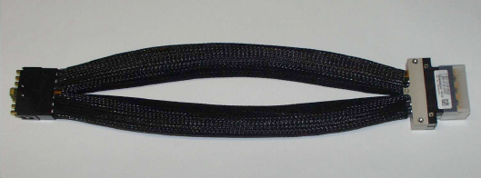

UHC4 / UHC4T pogo cable assembly: E8013UHP
The E8013UHP pogo cable assembly connects the DC Scale UHC4 / UHC4T card with the DUT interface.
CAUTION The cable has been designed to handle high currents and is therefore
fairly rigid. Extreme care must be exercised when handling and installing it.
The cable has two pogo blocks (A and B), combined into a single unit. As a result, the pogo blocks occupy two adjacent positions on the DUT interface.
Pogo cable assembly data
- Overall length: 425 mm ±10mm
- Pogo blocks: 2 (Pogo blocks A&B are combined)
- Channels per pogo block: 2

Compatibility of E8013UHP and E8024UHPS cables
The E8024UHPS cable is fully compatible with the E8013UHP cable when the A and B pogo blocks are installed in adjacent positions on the DUT interface. In such a case, no change to the model file is required when the E8024UHPS cable is used instead of the E8013UHP cable.
Functional changes
- Introduced in SmarTest 6.5.0